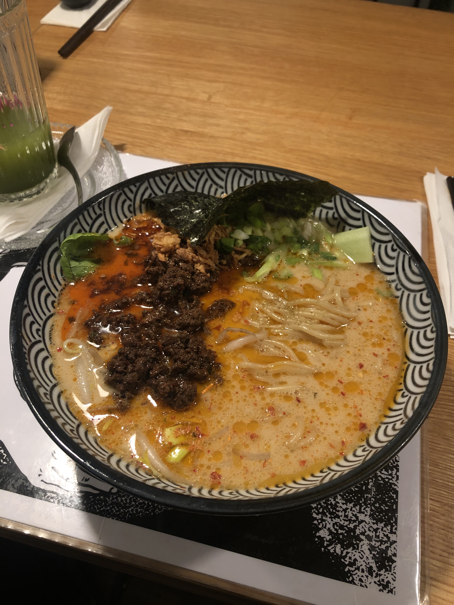

Restauracja azjatycka Molam znajduje się przy ulicy Rajskiej 3/4.
Charakteryzuje ją system podawania posiłków, a mianowicie sharing food concept,
polegający na zamawianiu kilku dań jednocześnie i dzieleniu się nimi,
dzięki czemu każdy będzie mógł spróbować maksymalną ilość różnych smaków.
Kuchnia charakteryzuje się intensywnymi smakami, bogatymi fakturami i aromatami.
Wszystko przygotowywane jest od podstaw.
Sama atmosfera w restauracji stworzona została na kształt Bangkoku,
idąc chociażby do łazienki masz wrażenie jakbyś znalazł się nagle w azjatyckim mieście.
Istotnym aspektem jest otwarta kuchnia pozwalająca śledzić na bieżąco proces przygotowania potraw.
Wspaniała przygoda, którą warto przeżyć!
Taj
Kolejna restauracja, tym razem tajska znajdująca się na ulicy Miodowej 19.
Od razu po wejściu do tego lokalu witają nas cudowne rysunki związane z kulturą tajską.
Na miejscu można skosztować specjałów tamtejszej kuchni w bardzo miłej atmosferze.
Jeśli nie jesteśmy pewni czy to nasze smaki istnieje tam oferta lunchowa,
dzięki której możemy spróbować poszczególnych smaków i wybrać coś dla siebie.
Ja osobiście uwielbiam tajskie curry o wyrazistym, ostrym smaku.
Bardzo chcialabym zwidzić Azje i spróbować smaków tamtejszej kuchni,
jednak póki nie mogę spełnić swojego marzenia udaje się do Taja
i tam zawsze zjem coś pysznego, coś co myślami przeniesie mnie do
innego regionu na świecie. Dodatkowym atutem jest wspaniałe wnętrze i
starter serwowany na początek - prażynki krewetkowe z sosem sojowym.
Ramen People
Tą nazwę można spotkać w dwóch miejscach w Krakowie, a mianowicie na ulicy Nadwiślańskiej 5/L1
oraz Czystej 8.Są to miejsca serwujące ramen, czyli tradycyjnej,
japońskiej zupy pełnej dodatków. Ramen przygotowywany jest od podstaw wedle tradycyjnych receptur.
Każda miska, którą mamy możliwość tam spróbować jest inna - różnorodna i pełna smaków i dodatków.
Kucharze przykładają wagę do tego, aby serwowane przez nich specjały łudząco przypominały japońską
kuchnię. Wszystkie przemyślane jest od początku do końca. Twórcy chcą propagować japońską
kulturę w Polsce. Ramen składa się z wywaru, z tare czyli wypełnienia, z olejów smakowych i
alkalicznego makaronu. Znajdą się także specjały wegańskie. Jeśli lubisz wyzwania to
zdecydowanie miejsce dla Ciebie!

Akita Ramen
To przykład restauracji serwującej ramen, która znajduje się na ulicy Węgłowej 4/LU 10.
Twórcy lokalu pomysł zaczerpnęli podczas pobytu w Japonii, gdzie poznali tamtejsze smaki.
Wracając do kraju właściciel postanowił zabrać ze sobą cząstkę Japonii i stworzyć lokal
serwujący ramen. Okazało się to ogromnym sukcesem i do dziś ciężko znaleźć tam miejsce.
Niekończące się kolejki i wytrwali ludzi, którzy w nich stoją świadczą o znakomitości
tego miejsca.
Yatai Sushi Otsumami Bar
Moja miłość do sushi rozpoczęła się wraz z podjęciem pracy w jednej z azjatyckich
restauracji w Krakowie. Gdy spróbowałam jednego smaku sushi chciałam więcej!
Dlatego znalazłam Yatai, który mieści się na Rynku Podgórskim 14. Restauracja ma mały lokal,
w którym jest zaledwie kilka stolików, dlatego warto wcześniej dokonać rezerwacji, aby
znaleźć miejsce dla siebie. Yatai serwuje sushi, dania z grilla Kamado i japońskie
przekąski oraz napoje. Mogę przyznać, że jest to jedna z moich ulubionych restauracji sushi,
nigdy nie zawiodłam się na smaku, a byłam tam wiele razy. Polecam to miejsce wielu znajomym
i do dziś każdy tam wraca i dziękuje mi za polecenie. Magiczne miejsce z doskonałym sushi!